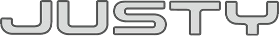
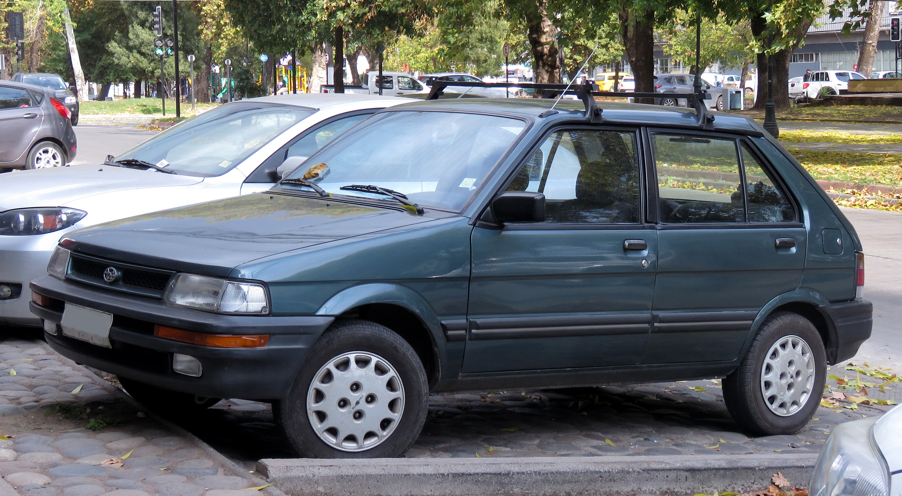
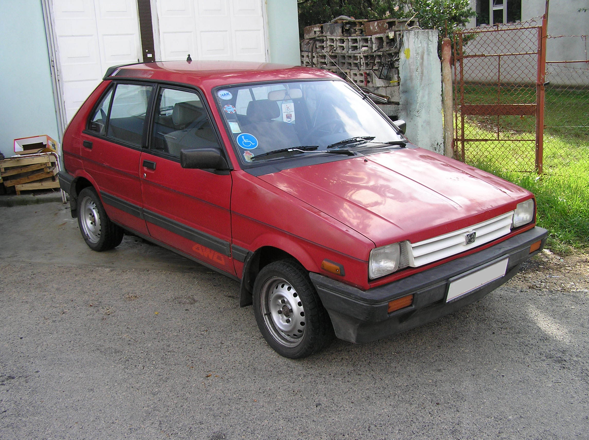
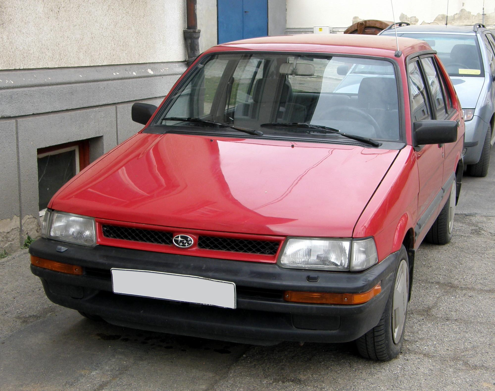
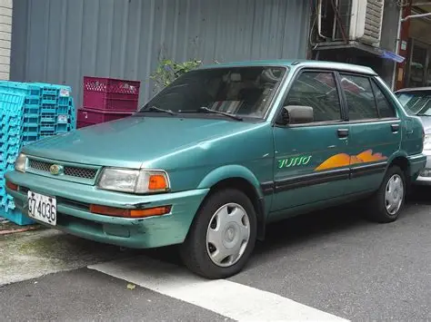

С 1984 по 1994 год выпускался субкомпактный хетчбэк, с 2007 по 2010 год выпускался субкомпактвэн на базе Daihatsu Boon, а с ноября 2016 года выпускается субкомпактвэн на базе Toyota Tank.
Впервые Subaru Justy был представлен в 1984 году в Японии. Изначально автомобиль оснащался пятиступенчатой механической трансмиссией, а с февраля 1987 года автомобиль оснащался также бесступенчатой трансмиссией.
В 1987 году автомобили Subaru Justy начали продаваться в Европе и Америке, а в 1989 году Justy претерпели рестайлинг. В некоторых странах, например, в Швеции, Subaru Justy назывался Subaru Trendy. В разное время Subaru Justy оснащался 1,0-литровым двигателем (J10) или же 1,2-литровым двигателем (J12), который в Европе развивал мощность 59 кВт (80 л. с.) при 5200 об/мин.

Justy до фейслифтинга
Justy после фейслифтингаВ США Subaru Justy продавался с 1987 по 1994 год с двигателем объёмом 1,2 л. Изначально автомобили выпускались с низкой крышей, а с 1989 года — с высокой крышей. С 1988 года Subaru Justy опционально поставлялся с полноприводной компоновкой, а в конце 1991 года все модели были оснащены системой впрыска топлива с несколькими портами. В 1990 году переднеприводные модели с кузовом трёхдверный хетчбэк стали оснащаться автоматическими передними ремнями безопасности, а в полноприводных моделях сохранились механические передние ремни безопасности. Пятидверный хетчбэк продавался в США с 1990 по 1994 год с полным приводом. В Канаде Subaru Justy продавался в 1995 году.
В Норвегии Subaru Justy (Trendy) продавался с конца 1984 года с двигателем объёмом 1,0 л и полным приводом (опционально). Полноприводные версии оснащались двигателем мощностью 40 кВт (54 л. с.), а переднеприводные — двигателем мощностью 36 кВт (48 л. с.) с одноствольным карбюратором. В полноприводной версии двигатель развивал максимальную скорость 145 км/ч и обеспечивал разгон до 100 км/ч за 16 секунд. Передаточные отношения были идентичны у двигателей объёмом 1,0 и 1,2 л. Автомобили с 1,0-литровым двигателем имели шины размером 145-SR-12, а автомобили с 1,2-литровым двигателем имели шины размером 165-65-R-13. Радиус поворота составлял 9,8 м, а объём топливного бака — 35 л.

На Тайване Subaru Justy продавался c 1989 года в кузове седан под названием Subaru Tutto с 1,2-литровым двигателем. Сборка организована компанией Ta Ching.
Первоначально Justy оснащался трёхцилиндровым двигателем EF объёмом 1,0—1,2 л в паре с механической пятиступенчатой, либо же с бесступенчатой трансмиссией. В 1989 году изменились передаточные числа, передние тормоза и внешние полуоси были увеличены, задний дифференциал был усилен, а валы передних мостов имели одинаковую длину благодаря промежуточному удлинительному валу.
В Европе Subaru Justy продавался с 1994 по 2001 год на базе второго поколения Suzuki Cultus, выпускавшегося в Венгрии. Он оснащался 1,3-литровым двигателем Suzuki G13BA в паре с пятиступенчатой механической трансмиссией Suzuki и полным приводом с вязкостным сцеплением.
После 1994 года ребеджинговые автомобили носили название Subaru Justy: